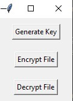

This project is an Incident Response Automation Tool designed to streamline and automate initial steps of incident response in cybersecurity incidents.
Skills Used:
Usefulness:
Incident response is a critical aspect of cybersecurity to quickly and effectively handle security incidents. This tool automates and guides the initial response steps, such as identifying the type of incident, providing specific response actions, and documenting the incident for further analysis.
The tool is valuable for security teams to respond promptly to incidents, minimize the impact of cybersecurity threats, and maintain the security and integrity of systems and data.
Description: This project is a simple file encryptor tool developed in Python. It provides encryption and decryption functionalities using AES-256 encryption.
Skills Used:
Usefulness:
The File Encryptor is useful for individuals or organizations who need to securely encrypt sensitive files. It offers a straightforward and reliable way to protect sensitive information from unauthorized access. Users can encrypt their files using strong encryption algorithms and decrypt them when needed, ensuring data confidentiality.
It can be particularly valuable for professionals handling sensitive data, such as confidential documents, financial records, or personal information, providing a secure means of data protection.

View Project